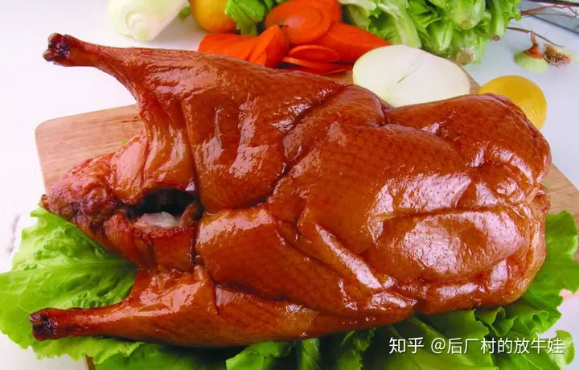
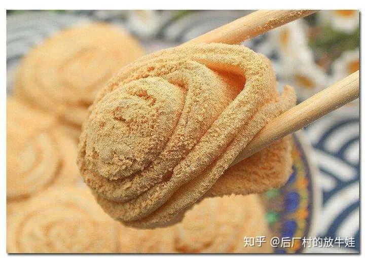
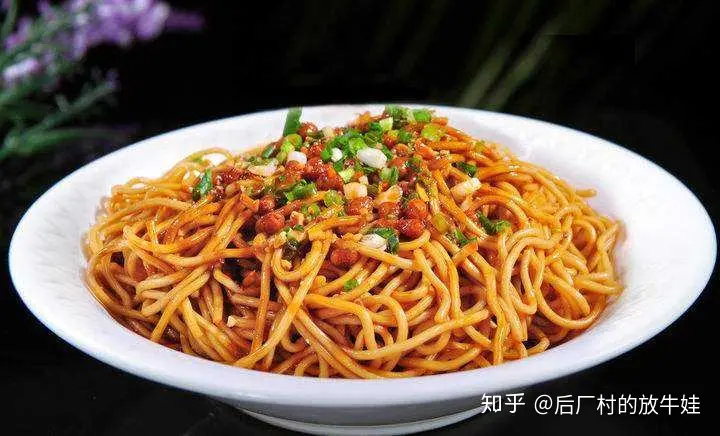
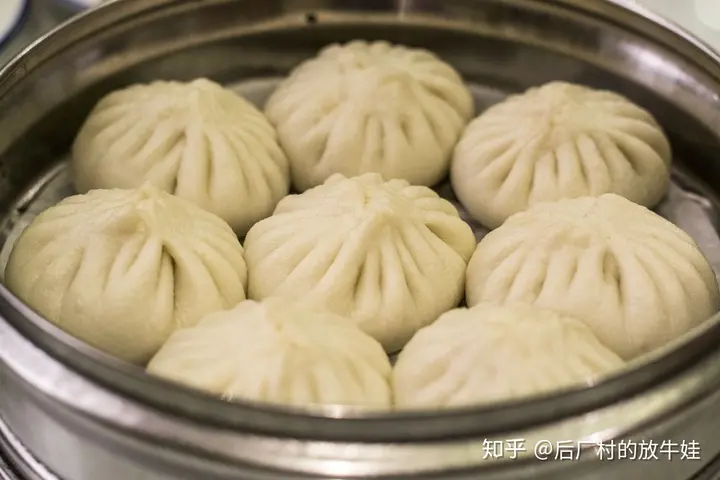
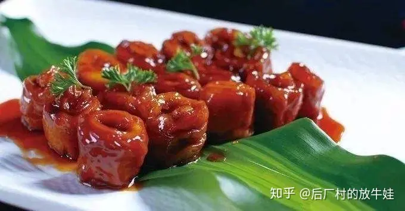
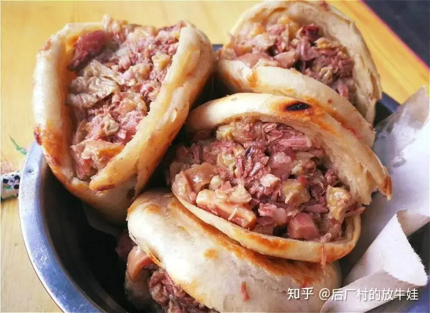
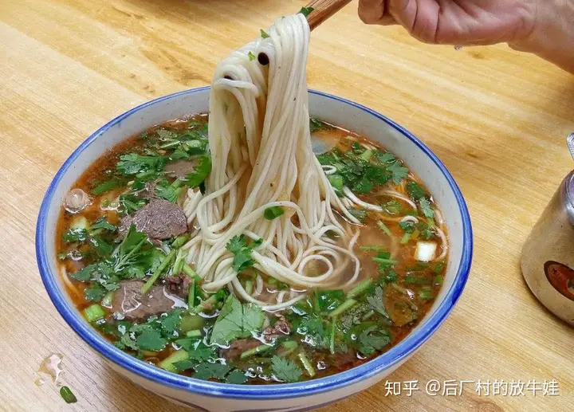

|  |  |  |  |
|---|---|---|---|
|  |
|
 |  |
INTRODUCTION: Chinese food culture has a long history, a wide geographical area, a large population, excellent cooking techniques and a deep cultural heritage, and is renowned worldwide. The Chinese food culture has played and is playing an important role in maintaining the prosperity of the Chinese nation, promoting the development of productive forces, and promoting social progress and civilization. There are more than 3,000 kinds of commonly used, more than 10,000 kinds of used cooking ingredients, and more than 500 kinds of seasonings for Chinese dishes. Salt is the ancestor of all tastes, Zigong is the capital of well salt, and salt gang is the family of gourmet. Food in Sichuan, taste in Zigong. Rooted in the culture of Bashu, born in the series of Sichuan cuisine, and formed with the prosperity and development of the salt economy, Zigong salt dishes have become the outstanding representative of the "small river gang" in southern Sichuan, which is different from the "upper river gang" and "lower river gang" dishes in Chengdu and Chongqing.
Here is an introduction to some of these cuisines:
|
Roast duck is a famous Beijing dish with world reputation. It originated in the Southern and Northern Dynasties of China. It was recorded in the Book of Food Records as a court food at that time. The material used is high-quality meat duck Beijing duck, fruit wood charcoal roast, rosy color, fat meat is not greasy, crispy outside and tender inside. It is known as "the world delicious" for its red color, tender meat, thick taste, fat but not greasy characteristics. |
|
Donkey Roll, is one of the old Beijing traditional snacks, finished yellow, white, red three colors, very beautiful. It is named "Donkey Roll" because the soy bean noodles sprinkled in the final production process are like the loess thrown up by wild donkeys rolling around in the suburbs of old Beijing. The ingredients of "Donkey Roll" are rhubarb rice noodles, soybean noodles, white sand, sugar, sesame oil, osmanthus, green and red silk and melon kernel. Its production is divided into billet, and filling, forming three processes. The "donkey roll" outer layer is covered with bean noodles, golden brown, sweet bean filling, soft entrance, unique flavor, bean filling entrance is melted, sweet into the heart, soybean noodles into the mouth can not chew, fine taste, is suitable for all ages traditional flavor snacks. |
|
Hot and dry noodles, one of the top 10 noodles in China and one of the most famous snacks in Wuhan, Hubei Province, can be made in a variety of ways. Alkali water is used, and edible oil, sesame paste, salad oil, sesame oil, chives, garlic seeds, radish diced, sour beans, brine juice, light soy sauce and other auxiliary materials. Hot and dry noodles are yellow in color, oily and delicious in taste. Due to its high heat, hot and dry noodles can also be used as a staple food and a nutritious breakfast to supplement the energy needed by the human body. |
|
Goubuli steamed stuffed bun is a snack made of flour, pork and other materials. It was founded in 1858 AD and has a history of more than 100 years. It is the first of the "three treasures in Tianjin" and one of the time-honored brands in China. Goubuli steamed stuffed bun has fine selection of noodles and fillings, strict production process and beautiful appearance, especially symmetrical pleats of steamed stuffed bun. Each steamed stuffed bun has no less than 15 pleats. Fresh steamed stuffed bun, fresh but not greasy, fragrance palatability. Goubuli steamed buns are mainly fresh meat buns, with 98 varieties in 6 categories including three fresh buns, seafood buns, soy sauce buns and vegetarian buns. |
|
In the early years of Guangxu in the Qing Dynasty, Jinan Jiu Hua Lou Restaurant owner initiated. The pig large intestine is blanched and fried, then filled with more than 10 kinds of ingredients, with a low fire processing. After the dish, sour, sweet, fragrant, spicy, salty five taste, red color, soft and tender texture. Nine turn large intestine into vegetables, red color, translucent, flexible abnormal, layer upon layer and layer upon layer. Eat soft texture, both sour, sweet, fragrant, spicy, salty five taste, fat but not greasy, fresh smell beautiful, unusual taste, long food not tired. |
|
|
Chongqing hot pot, also known as tripe hot pot or spicy hot pot, is a traditional Chinese diet, originated in the late Ming and early Qing dynasties in Chongqing Jialing River, Chaotianmen and other docks of boatmen and slenders of the rough dining way, raw materials are mainly beef tripe, pork yellow throat, duck intestines, beef blood Want, etc.. Hot pot ingredients are all-inclusive, the dishes have developed to hundreds of species, including edible things in the food kingdom, the dishes have been expanded to poultry, aquatic products, seafood, game, animal offal, all kinds of vegetables and dried fresh mushrooms and fruits. On the basis of maw hot pot, it has developed into clear soup hot pot, mandarin duck hot pot, beer and duck hot pot, dog hot pot, fatty beef hot pot, spicy chicken hot pot, etc. There are no less than a hundred kinds of varieties, and western hot pot for foreigners. |
|
Baoding donkey burger is a kind of folk snack in northern China, which originated in the ancient city of Baoding in Hebei Province and is widely spread in the central Hebei Plain, with the longest history in the Caohe area of Xushui County in northern Baoding. Donkey meat hotpot is a kind of noodle food, generally made of dead flour (note: dead flour is unfermented flour, fermented flour is called live flour, and something similar made of live flour is called "hotpot"), which is cooked in a cake pan and then baked in the stove to make it charred on the outside and tender on the inside, with a unique flavor; while it is hot, it is split with a knife and added to the hot cooked donkey meat. Donkey meat is the most authentic way to eat it. Some chefs will add donkey sausage to enhance the flavor, which is also unique. Donkey meat is a typical low-fat, high-protein food, containing up to 18.6 grams of protein in 100 grams, much higher than the protein content of pork, beef and lamb, while the fat content is only 0.7 grams, and the calcium, phosphorus and iron content is also relatively high, as the saying goes, "Dragon meat in the sky, donkey meat on the ground", which shows the status of donkey meat. The selection of donkey meat used in "donkey meat hot pot" is extremely strict, and the meat from the face of the donkey is the most tender and delicate, after fine processing of the donkey meat, with the freshly baked, crispy and soft hot pot, with the ancient Baoding "Da Ci Ge" pickles and The meat is served with the old-fashioned "Da Ci Ge" sauce and millet congee. |
|
Beef noodles, commonly known as "beef ramen", is the most distinctive and popular economic snack in Lanzhou. Lanzhou people have eaten beef noodles to become famous and addicted to eating. According to legend, beef noodles is the end of the Qing Dynasty, Guangxu years, a Hui people called Ma Baozi chef created the noodles, and then generations of new and improved, but this noodle culture to the extreme, eat a famous world. Today, every street in Lanzhou City, no matter how big or small, has at least one or two beef noodle shops. |